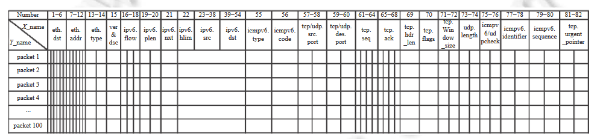

IPv6 中一种基于卷积的 DDoS 攻击两阶段防御机制
研究现状
现有的研究内容：
在DDoS攻击防御工作中，针对DDoS攻击事件的监控研究逐渐受到重视。早期的研究，如Yuan等人[14]提出通过在网络中设置互相关观察点，监控DDoS攻击在宏观上引起的时空流量模式变化。Singh等人[15]通过监控流经边缘路由器的流量，设置归一化路由器熵、数据包速率和熵速率阈值，实时监控DDoS行为。Liu等人[16]基于模糊控制理论和统计理论，建立正常传输行为模型，实现网络监控和预警功能。随后，Liu等人[17]提出名为UnivMon的流量监测框架，基于草图理论使用数据平面中的流统计信息来计算应用程序级指标，在一系列监控任务中实现了高准确性。
其他研究还包括基于SDN的流量全局信息提出DDoS攻击缓解架构[18]、基于熵的有状态数据平面监控物联网中的DDoS攻击[19]、基于隐半马尔可夫模型的异常检测器[20]、以及基于虚拟机的分层聚类方法提升实时监控性能[21]。
总体来看，DDoS攻击的监控手段正从宏观观察逐渐发展到基于IP熵等流量统计学指标，再到引入聚类、马尔可夫链、支持向量机等人工智能分析手段。未来的研究应引入更为优秀、更贴合DDoS攻击监控场景的人工智能核心，探讨提升监控实时性。
DDoS攻击流量过滤研究的重点在于区分网络中混杂的DDoS流量报文，在监控到攻击发生后，有效提取DDoS流量的来源，基于此下发针对性的流量阻断策略以缓解攻击。
近年来，大量工作引入人工智能模型作为检测核心。Yuan等人[24]提出基于深度学习的DDoS攻击检测方法DeepDefense，主要利用循环神经网络（RNN）实现高级特征提取，较传统机器学习方法有更高准确度。Rehman等人[25]提出名为DIDDOS的新型高效策略，使用基于门控循环单元（GRU）的RNN网络抵御现实世界中的新型DDoS攻击。Ali等人[26]提出一种快速、大规模的监控系统，获取DDoS攻击发生时的暗网流量，形成数据集进行训练和检测。Saad等人[27]在IPv6网络中提出使用反向传播神经网络的智能ICMPv6 DDoS攻击检测框架v6IIDS。
其他研究还包括基于SVM分类算法建立DDoS攻击模型[28]、基于云的分布式深度学习框架实现物联网安全[29]、轻量级DoS检测方案DLDM[30]、实用的轻量级深度学习DDoS检测系统Lucid[31]、以及结合CNN和RNN的分层时空特征学习异常检测方法HAST-NAD[35]。
尽管深度模型在检测攻击类型广泛性、准确率和时间序列感知力等方面具有优势，但随着网络场景的复杂化，深度学习模型的使用应考虑轻量化问题，尝试引入结构更轻、开销更低的新颖技术来解决问题[36]。
现有研究存在的问题：
这些研究现状的问题主要体现在以下两个方面：
-
当前的DDoS攻击监控手段在实时性和适应性上存在不足。虽然研究已经从宏观观察发展到使用IP熵等统计指标，再到引入聚类、马尔可夫链和支持向量机等人工智能方法，但这些方法可能无法及时响应新型和复杂的攻击场景。它们在高流量、高速率的网络环境中可能性能下降，无法满足对实时监控和快速预警的需求。因此，需要引入更先进、更适合DDoS攻击监控场景的人工智能核心技术，以提高监控的实时性和准确性。
-
在DDoS攻击流量过滤方面，虽然深度学习模型如RNN、CNN等在攻击检测中表现出高准确率和广泛的检测能力，但其模型复杂度高，计算和存储开销大。这使得它们在实际部署中面临挑战，尤其是在资源受限的环境中。此外，随着网络场景的复杂化，这些深度模型可能无法有效处理新的攻击手段，且缺乏对模型轻量化和高效性的关注。因此，需要开发结构更轻、资源消耗更低的新技术，以实现高效、可扩展的DDoS流量过滤，同时保证检测性能。
总体设计
两阶段防御机制结构如图1所示，包含4个部分: IPv6-SAVI实验拓扑, IPv6流量预处理策略, 检测模型构建 和 两阶段DDoS攻击防御策略。
本文在东北大学校园网的CERNET2服务器上搭建了IPv6-LAN拓扑作为实验环境，引入IPv4公开流量集CIC-DDoS2019，并通过NAT 4to6翻译技术在IPv6-LAN中重放，模拟纯IPv6的DDoS攻击流量源，解决了IPv6环境下公开DDoS流量集匮乏的问题。
我们设计了IPv6流量预处理策略，将捕获的原始流量解析为可输入深度学习模型的样本格式，包括针对BCNN模型的流量矩阵和针对1DCNN模型的一维报文。基于DDoS防御中事件监控和流量过滤的不同需求，构建了两种不同的卷积神经网络检测模型：BCNN和1DCNN，作为决策核心。最终，提出了两阶段的DDoS攻击防御策略，在IPv6流量预处理和检测模型的基础上，实现了DDoS攻击的快速防御，包括利用BCNN模型进行预检测，实时监控网络流量并告警DDoS攻击的发生，以及在告警后利用1DCNN模型逐条区分和过滤混杂的DDoS报文。
IPv6 流量预处理策略
IPv6 报文头部信息提取
IPv6流量预处理策略旨在将网络中捕获的原始IPv6流量数据处理成可输入本文构建的深度学习检测模型的格式。在实验中，我们使用Wireshark作为流量捕捉器，以PCAP格式抓取网络中的IPv6流量，然后解析并存储报文的头部信息进行分析。
为了提升流量信息的提取速度，我们基于IPv6报文头部定长的特点，设计了解析流程，直接提取PCAP中的16进制原始报文字段作为样本数据，省去了传统的报文信息转译等步骤。PCAP文件以固定长度为24字节的文件头开始，记录了当前文件捕获的时间跨度和报文数量等信息。随后是依次存储的报文数据，每个报文由固定长度为16字节的帧信息部分和可变长度的内容部分组成。帧信息部分记录了包的到达时间、经历时间和捕获长度等信息；内容部分包含报文的头部信息和负载数据。图2中的报文，在第1个报文中, 帧信息部分的第 13 和 14 字节以倒序存储当前报文内容的长度。

我们通过跳过PCAP文件头，在每个报文的帧信息部分读取报文长度，从而提取完整的报文内容。根据报文信息的特定字节（如第21字节的值），匹配当前报文的类型（例如，“11”表示ICMPv6报文）。利用IPv6不同报文类型的头部定长特点，我们能够截取对应报文的完整头部信息。本文研究了ICMPv6、TCP和UDP这三种报文类型，它们也是DDoS防御中最常分析的三种类型。表 1 展示了这三种类型报文的不同字段及其在头部中的对应位置，包括以太网和 IPv6 的共有字段以及各类型报文的特殊字段。总结如表1所示：
模型输入样本设计
图4所示, 在本文中, 我们将IPv6正常流量和DDoS攻击流量混合作为数据源. 针对BCNN模型的二维矩阵输入和1DCNN模型的一维向量输入, 设置了名为流量矩阵和一维报文两种不同的样本.
二维流量矩阵样本设计
在预检测阶段提出了一种包含100行82列的二维流量矩阵样本，用于高效收集和监控网络流量，以检测DDoS攻击。由于逐一检测报文效率低且开销大，BCNN模型将整个流量矩阵作为输入，一次性扫描矩阵中的100行报文。当出现DDoS攻击流量时，模型通过感知矩阵中异常的流量态势变化，间接判断网络中是否存在DDoS攻击。
流量矩阵的Y轴表示连续抓取的100个报文的头部信息，X轴表示每个报文的82个头部字段，其中X1–X54为公共字段，其余字段对应ICMPv6、TCP和UDP的特殊字段。我们根据每个报文的协议类型填充相应字段，空字段以0填充。通过构建由<流量矩阵样本, 矩阵标签>组成的数据集，将含有DDoS攻击报文的矩阵标记为1（恶意），全为正常报文的矩阵标记为0（正常）。同时，通过调整矩阵中DDoS攻击报文的数量，模拟不同强度的DDoS攻击事件，以测试BCNN模型的监控精度变化。

一维报文样本设计
在深度检测阶段，本文使用1DCNN模型来具体区分网络中的单个报文是否为DDoS攻击流量。因此，1DCNN的数据集由<一维报文样本, 报文标签>构成。我们参照流量矩阵中X轴上的82个字段，针对每个报文形成1×82的固定一维向量作为1DCNN模型的输入。其中，标签(0: 正常, 1: 恶意)表示当前报文是否为DDoS攻击流量。
两阶段的DDoS防御策略
防御流程
将DDoS攻击防御细化为预检测阶段和深度检测阶段，旨在提升DDoS攻击的响应速度以及流量过滤效率。
预检测阶段
预检测阶段主要负责监控网络中的DDoS攻击事件，利用BCNN模型的矩阵视野高效地感知网络流量态势变化。当DDoS攻击发生且流量出现异常时，模型能够快速告警。
深度检测阶段
深度检测阶段在告警后立即介入，使用1DCNN模型对一维报文样本进行检测，区分并过滤混杂在网络中的DDoS攻击报文，提取源信息以进行阻断和缓解。
为了提高防御效率，本文引入了动态窗口策略。在预检测阶段告警后，计算当前DDoS攻击的“强度”（即攻击报文占总流量的百分比）。当强度大于20%时，深度检测阶段直接抓取网络流量进行检测；当强度小于20%时，则针对预检测阶段标记为恶意的流量矩阵进行检测。时间窗口T的大小根据当前强度与20%阈值的差值动态调整，以平衡检测灵敏度和冗余，设置计数器C，当在连续C个时间窗口内未检测到DDoS攻击时，结束检测过程。
模型构建
BCNN模型（预检测阶段）
BCNN用于预检测阶段，主要任务是通过分析网络流量矩阵来监控DDoS攻击。
模型结构：
- 输入层：输入是一个100×82的二维流量矩阵，每一行表示一个报文的头部字段，总共82个字段。
- 卷积层：
- 第一个卷积层：7×7的普通卷积核，生成4个特征图（Feature maps），输出大小为94×76。
- 二值卷积层1（Binary_conv1）：5×5的卷积核，生成8个特征图，输出大小为47×38。
- 二值卷积层2（Binary_conv2）：3×3的卷积核，生成16个特征图，输出大小为23×19。
- 二值卷积层3（Binary_conv3）：3×3的卷积核，生成16个特征图，输出大小为11×9。
- 池化层：在卷积层之间插入了2×2的最大池化层（Max pooling），用于下采样，降低特征图的维度。
- 全局平均池化（GAP）：在最后一个池化层之后，通过全局平均池化层将16个特征图的维度降低为1维，即每个特征图取平均值，最终输出为16维向量。
- 输出层：最后是一个全连接层，用于二分类任务，输出为2个节点，分别对应是否发生DDoS攻击的可能性。
graph TD; Input[100×82流量矩阵] –> Conv1[7×7卷积层]; Conv1 –> Pool1[Max Pooling]; Pool1 –> BinaryConv1[5×5二值卷积层]; BinaryConv1 –> Pool2[Max Pooling]; Pool2 –> BinaryConv2[3×3二值卷积层]; BinaryConv2 –> Pool3[Max Pooling]; Pool3 –> BinaryConv3[3×3二值卷积层]; BinaryConv3 –> GAP[全局平均池化]; GAP –> Output[二分类输出];
1DCNN模型（深度检测阶段）
1DCNN模型用于深度检测阶段，专门负责对单个报文进行精细分类，以判定报文是否为DDoS攻击流量。该模型的设计目标是处理网络中的每一个报文，通过深入分析其头部字段来识别潜在的恶意流量。
模型结构：
-
输入层：输入为一个一维报文向量，大小为1×82。该向量包括报文的82个头部字段，每个字段包含了具体的网络信息，如IP地址、端口号、协议类型等。
-
卷积层：
- 第一个卷积层：使用1×7的卷积核，生成2个特征图，输出大小为1×76。该层提取初始特征，处理报文头部的局部相关性。
- 第二个卷积层：使用1×5的卷积核，生成4个特征图，输出大小为1×38。进一步缩小数据维度，并提取更多特征。
- 第三个卷积层：使用1×3的卷积核，生成8个特征图，输出大小为1×19。逐步增加卷积核的深度，提升模型对特征的表达能力。
- 第四个卷积层：使用1×3的卷积核，生成8个特征图，输出大小为1×9。该层帮助进一步提取细粒度的特征。
-
池化层：在每个卷积层之间插入1×2的最大池化层（Max pooling），用于降低特征图的维度，减小计算复杂度，同时保留关键特征。
-
全局平均池化层（GAP）：与卷积层和池化层配合使用，通过全局平均池化将特征图转换为1维特征向量，减少特征维度，从而简化模型并避免过拟合。
-
输出层：最后的输出层是一个全连接层，用于二分类任务，输出大小为2。该层对报文进行分类，判断是否为DDoS攻击报文。
模型流程图
graph TD; Input[1×82报文向量] –> Conv1[1×7卷积层]; Conv1 –> Pool1[Max Pooling]; Pool1 –> Conv2[1×5卷积层]; Conv2 –> Pool2[Max Pooling]; Pool2 –> Conv3[1×3卷积层]; Conv3 –> Pool3[Max Pooling]; Pool3 –> Conv4[1×3卷积层]; Conv4 –> GAP[全局平均池化]; GAP –> Output[二分类输出];